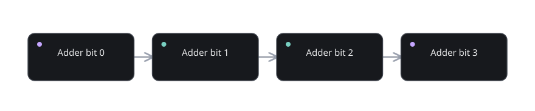

Part 03 of 12
Arithmetic, signs, and overflow
Build the mathematics that later becomes a physical arithmetic circuit.
The story before the details
Arithmetic does not require a mysterious calculator hidden inside the processor. The basic problem is to add columns with weights 1, 2, 4, 8, and so on. Carrying is simply what happens when a column contains two or three units but is allowed to keep only zero or one. That carry enters the next position, where the weight is doubled.
Negative numbers are more subtle because there is no physical minus-sign wire attached to an ordinary register. Two’s complement gives each fixed-width pattern a consistent signed interpretation while preserving the same addition circuitry. Inversion plus one produces the modular additive inverse; subtraction can therefore reuse the adder rather than needing a separate arithmetic engine.
Finite range is not a footnote. Eight-bit unsigned storage wraps after 255, while signed eight-bit storage represents −128 through +127. The circuits still output bits when a mathematical result cannot fit. Your job is to understand the interpretation and the status flags, rather than assume the hardware stops operating.

What you will discover
These six lessons are arranged so each one answers a question created by the previous one. Do not rush to the last lesson. If a concept feels opaque, use the checkpoint before continuing.
- 03.01Binary counting and carrying↗How can 1+1 produce 10?
- 03.02Adding several bits↗What if two operands and a carry meet?
- 03.03Two’s complement↗How can a bit pattern mean negative five?
- 03.04Negating with invert-plus-one↗Why flip bits and add one?
- 03.05Subtraction is addition↗Why does one adder do both jobs?
- 03.06Overflow and status flags↗When can correct circuitry produce the wrong answer?
Build the mathematics that later becomes a physical arithmetic circuit. You should be able to explain each concept using only an input, a rule, an output, and any state that must be retained.